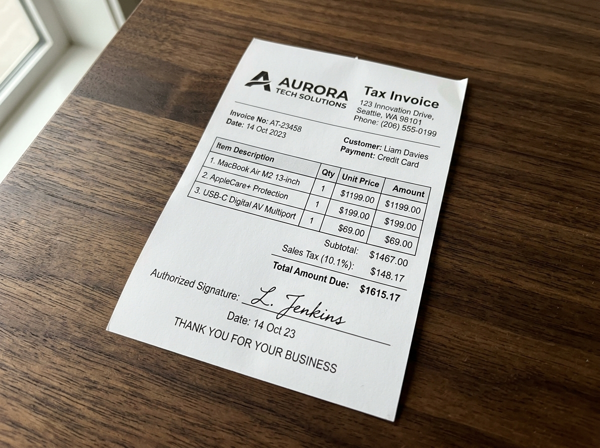
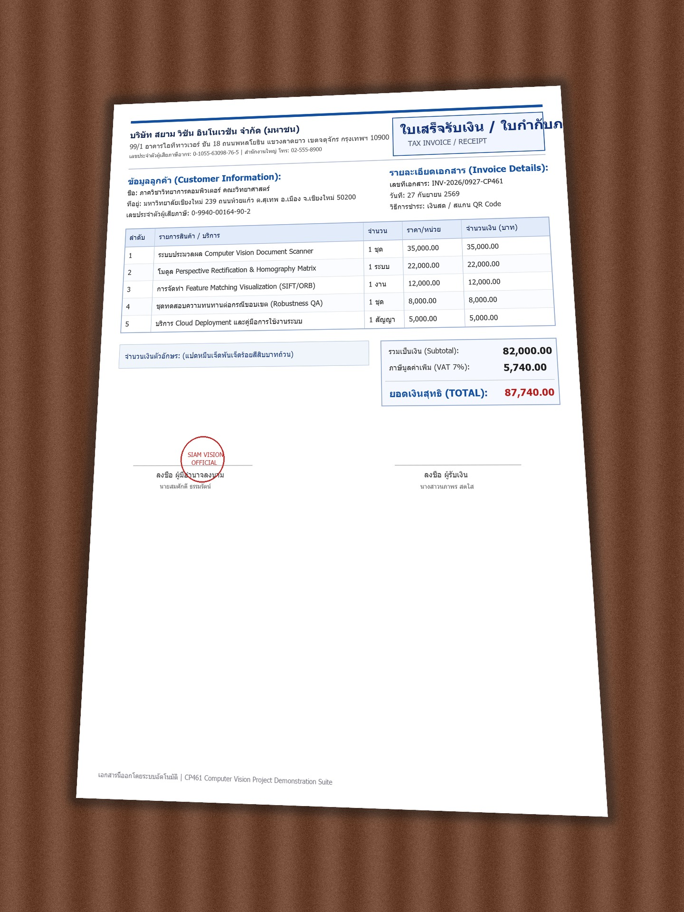
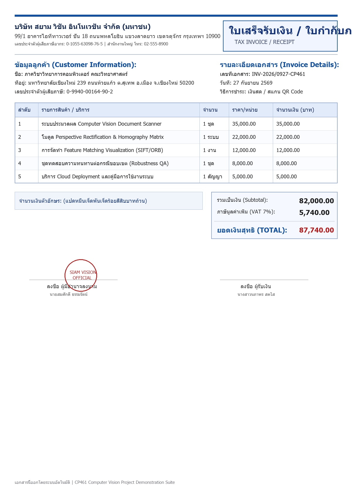
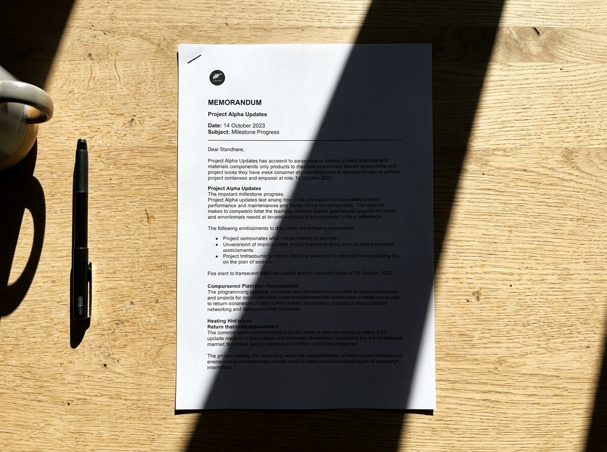
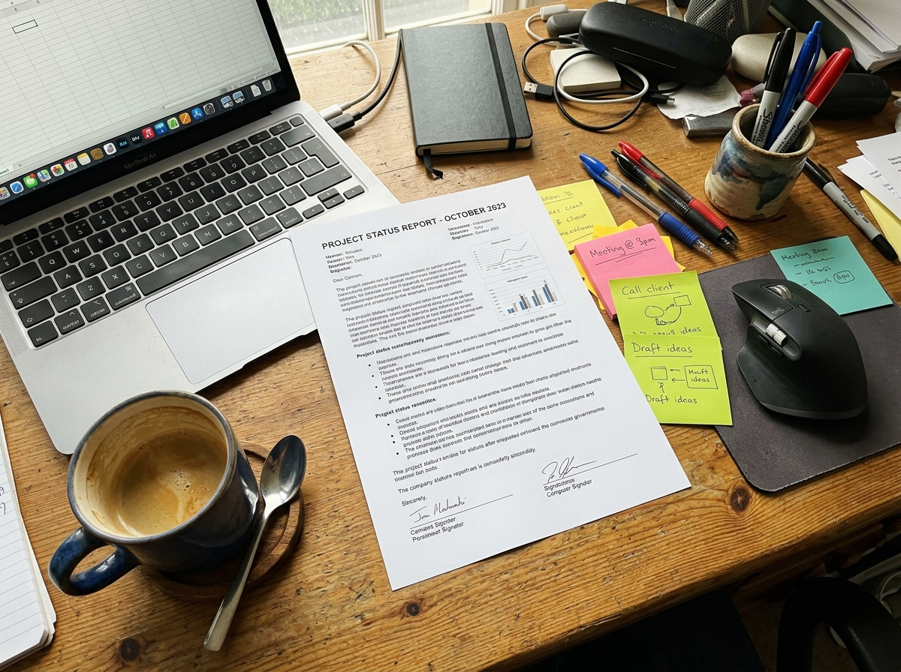
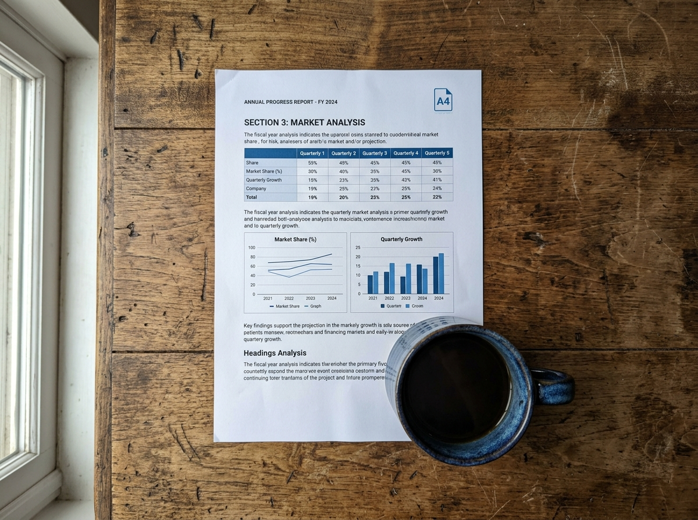

หน้านี้สรุปให้เห็นอย่างชัดเจนที่สุดว่าในแต่ละสถานการณ์การนำเสนอ คุณต้องเลือกโหมดอะไร, ใช้ไฟล์รูปภาพใดจากโฟลเดอร์ demo/,
ต้องอัปโหลดใส่ช่องไหนบนหน้าจอ, และต้องปรับตั้งค่าหรือกดปุ่มอะไรบ้าง เพื่อให้การพรีเซนต์ราบรื่นและได้คะแนนเต็ม 10/10
บนหน้าเว็บมีเมนู Dropdown "ชุดภาพตัวอย่างทดสอบ" ที่เชื่อมต่อกับโฟลเดอร์ demo/ แล้ว คุณเพียงแค่คลิกเลือกชื่อภาพ ระบบจะดึงไฟล์และตั้งค่าโหมดให้อัตโนมัติในคลิกเดียวโดยไม่ต้องเปิดโฟลเดอร์
หากต้องการสาธิตการอัปโหลดไฟล์ด้วยตนเอง ให้กดปุ่ม "Browse files" แล้วเลือกภาพจากโฟลเดอร์ d:\Document_ScannerAndPerspective_Rectifier\demo\ ตามตารางด้านล่างได้ทันที
ทำความเข้าใจว่าแต่ละช่องบนหน้าจอแอปพลิเคชันทำหน้าที่อะไร และรองรับไฟล์ประเภทไหน
📄 [Demo Standard 1] หรือ 🔍 [Demo Reference Pair 1]01_aurora_tax_invoice.jpg, 06_thai_tax_invoice_photo.jpg, edge1-edge5)
pair1_thai_tax_invoice_flat.jpg หรือ pair2_aurora_invoice_flat.jpg)
SIFT (หรือ ORB)BFMatcher (หรือ FLANN)0.75
สรุปครบทุกการเดโมแบบย่อ หยิบไปใช้ได้ทันทีตอนพรีเซนต์
| สถานการณ์ที่ต้องการ Demo | ต้องปรับโหมดเป็น | ช่องที่ 1: Input Document Image | ช่องที่ 2: Reference Image | ผลลัพธ์ & จุดที่ต้องชี้ |
|---|---|---|---|---|
| 1. สแกนใบกำกับภาษีภาษาอังกฤษ (Auto) | Auto | 01_aurora_tax_invoice.jpg | — ไม่ต้องใส่ — | ตรวจจับ 4 มุม Contour สมบูรณ์ ดัดตรง A4 ทันที |
| 2. สแกนใบเสร็จภาษีไทย Siam Vision (Auto) | Auto | 06_thai_tax_invoice_photo.jpg | — ไม่ต้องใส่ — | เอกสารไทย A4 แนวตั้ง ดัดมุมมองและตัวหนังสือคมชัด |
| 3. สแกนบทความวิชาการ/สูตรเลข (Auto) | Auto | 04_academic_research_paper.jpg | — ไม่ต้องใส่ — | โชว์สูตรและกราฟ จากนั้นเลือกฟิลเตอร์ Clean B&W |
| 4. SIFT + RANSAC ใบเสร็จไทย (เกณฑ์หลัก) | Reference | pair1_thai_tax_invoice_skewed.jpg | pair1_thai_tax_invoice_flat.jpg | เส้นเขียว Inliers 120 คู่ (81.6%) เมทริกซ์ H 3x3 |
| 5. SIFT + RANSAC ใบแจ้งหนี้ Apex (คู่ฮิต) | Reference | pair3_apex_invoice_skewed.jpg | pair3_apex_invoice_flat.jpg | Inliers 247 คู่ (78.9%) เส้นจับคู่หนาแน่นมาก |
| 6. ทดสอบแสงเงาทับกระดาษ (Edge Case 1) | Auto | edge1_heavy_shadow.jpg | — ไม่ต้องใส่ — | ขึ้น Fallback แจ้งเตือน → เปิด Manual Adjustment |
| 7. ทดสอบโต๊ะทำงานรก (Edge Case 2) | Auto | edge2_cluttered_desk.jpg | — ไม่ต้องใส่ — | ระบบใช้ Fallback minAreaRect ตีกรอบสำเร็จ ไม่แครช |
| 8. ทดสอบมุมถูกแก้วกาแฟทับ (Edge Case 3) | Auto | edge3_corner_occluded.jpg | — ไม่ต้องใส่ — | โชว์ฟีเจอร์ลากจุดมุม BR หลบแก้วกาแฟด้วยมือ |
ทำตามทีละข้อได้อย่างแม่นยำ พร้อมพรีวิวรูปภาพจริงประกอบ

demo/01_Standard_Documents/01_aurora_tax_invoice.jpg
01_aurora_tax_invoice.jpg)


pair1_thai_tax_invoice (ใบเสร็จภาษีภาษาไทย Siam Vision)
SIFT, Matcher = BFMatcher, Ratio = 0.75

demo/03_Edge_Cases/edge1_heavy_shadow.jpg


minAreaRect หาขอบเอกสารหลักได้สำเร็จ